Why this lab
Least-privilege access is easy to state as policy and easy to get wrong in practice — overly broad managed policies get attached "to keep things moving," and nobody finds out until an audit or an incident. This lab builds a restricted IAM identity from scratch and then tests the boundary as the attacker or auditor would: sign in as that user and try to do something it shouldn't be able to do.
Provisioning the user and group
Navigate to IAM
Opened the IAM console to begin provisioning a scoped-down identity rather than reusing root or an over-permissioned existing user.
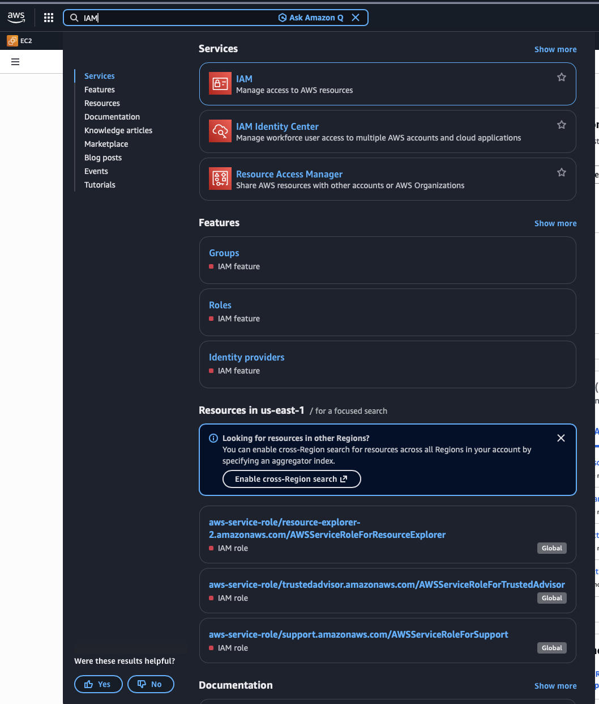
Create the user
Under Users, selected Create user and named the identity Alexa — a dedicated test identity rather than reusing an admin account.
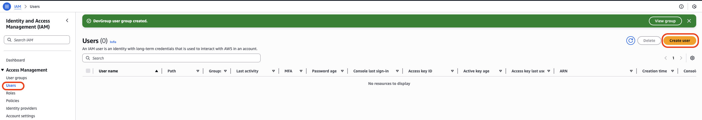
Set user details
Enabled console access with an autogenerated password and required a password reset on first sign-in — no shared or reused credentials.
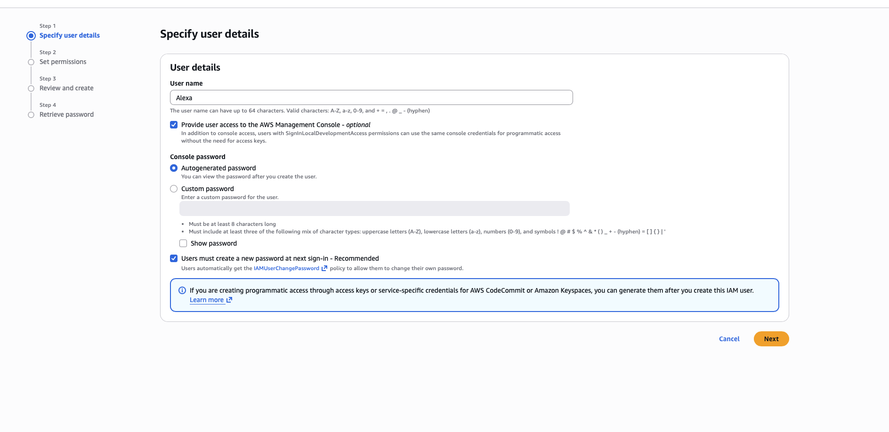
Create the permissions group
Rather than attaching policies to the user directly, created a group — DevGroup — and attached exactly two managed policies: AmazonS3FullAccess and AmazonEC2ReadOnlyAccess. The deliberate asymmetry is the point of the test: full access to one service, read-only to another.
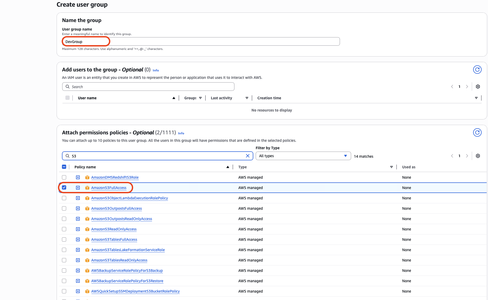
Group created
Confirmed DevGroup existed with its policy set before attaching any user — verifying the permission boundary independent of identity.
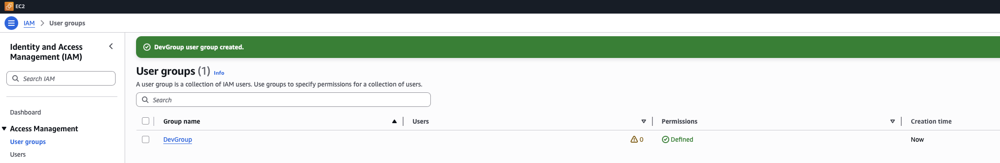
Attach user to group
Added Alexa to DevGroup during user creation — inheriting the group's policy set rather than getting any standalone permissions.
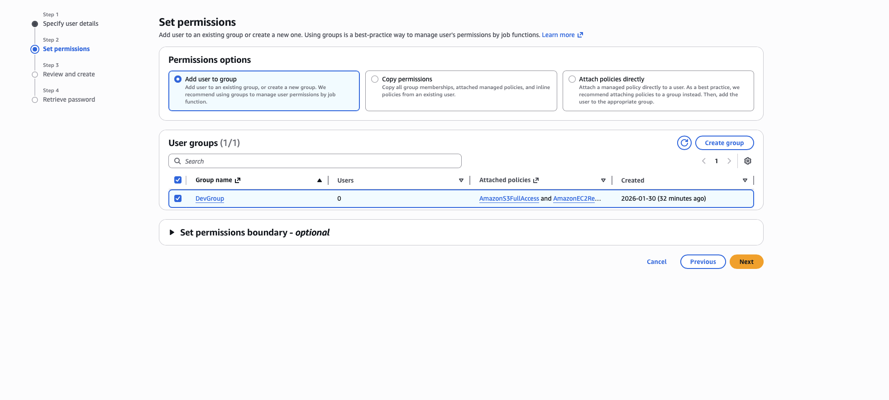
Review before create
Final review confirmed the only permissions in play were DevGroup's policies plus the default IAMUserChangePassword self-service policy — no surprise inherited access.
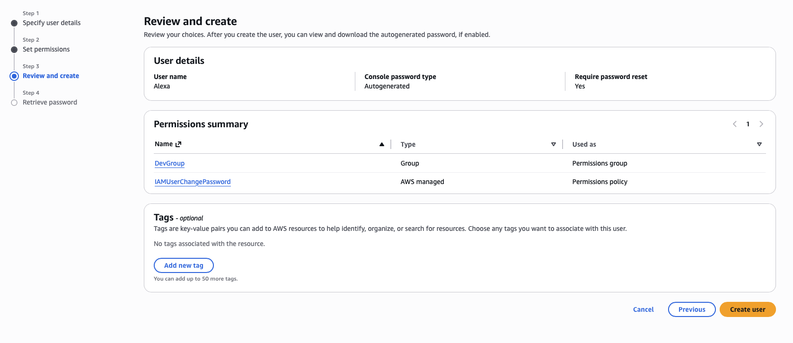
Retrieve credentials
Captured the one-time autogenerated password — AWS only surfaces this once, so it has to be recorded at creation time.
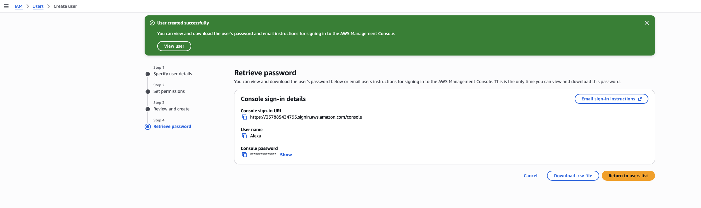
User confirmed
Alexa now shows in the Users list, bound to DevGroup, with no MFA yet — the next gap to close.
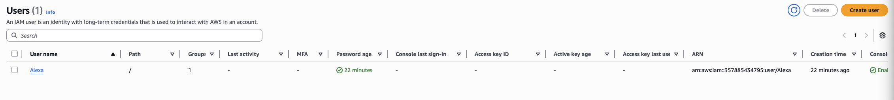
Enforcing MFA
Flag console access without MFA
The user's security credentials tab flagged console access as enabled without MFA — a real finding a security review would catch, so it got fixed rather than left as a known gap.
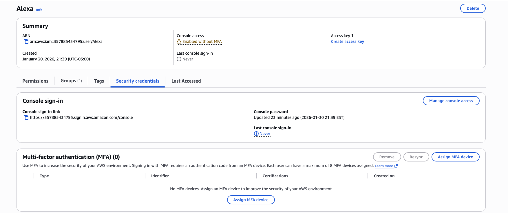
Choose device type
Selected an authenticator app as the MFA device type — no hardware token needed for this identity's use case.
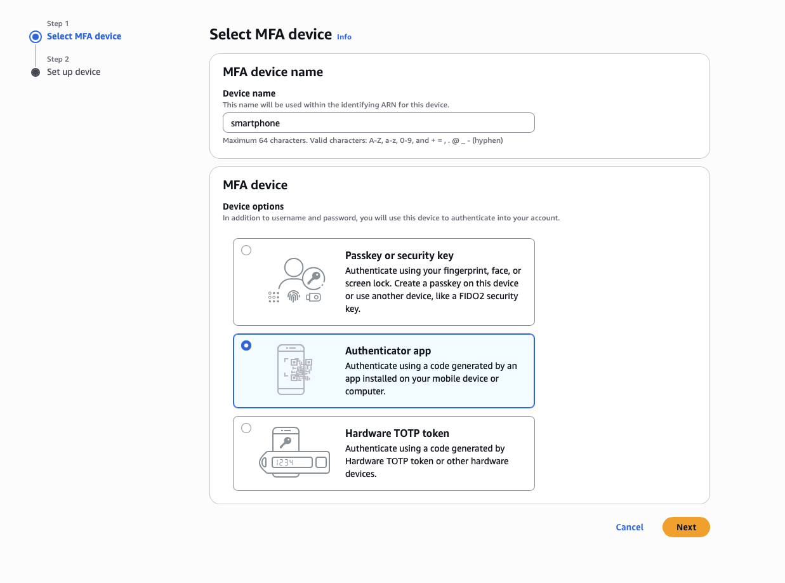
Bind the device
Scanned the QR code into an authenticator app and confirmed with two consecutive codes, proving possession of the device rather than a single lucky code.
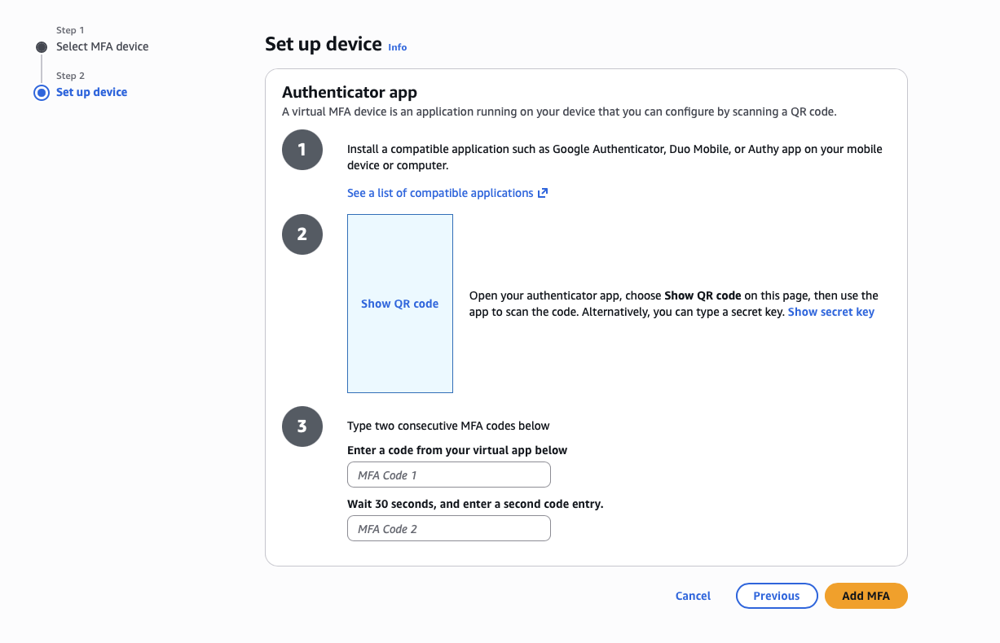
MFA active
Console access now shows enabled with MFA, and the virtual device is listed under the user's security credentials.
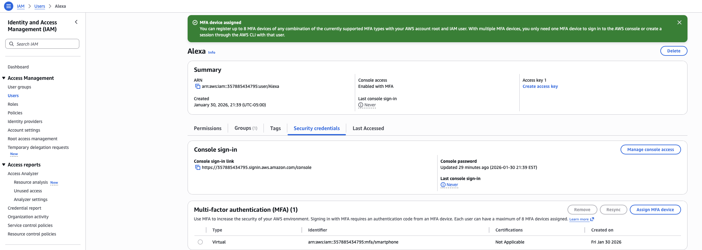
Verifying the boundary as the restricted user
This is the part most labs skip: after building the identity, signed out of the admin account and signed back in as Alexa, then deliberately tried both an allowed action and a disallowed one.
Signed in as Alexa
Confirmed the session was running as the IAM user, not the account root or an admin identity — a clean baseline for the test.
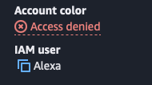
Created an S3 bucket
With AmazonS3FullAccess in the policy set, bucket creation succeeded without issue — confirming the group policy was actually applied to this identity's session.
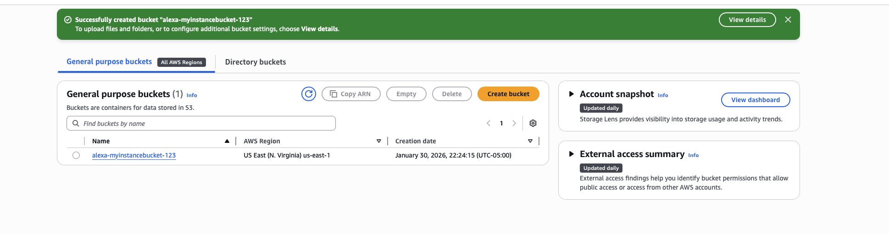
Attempted to launch an EC2 instance
Navigated to EC2 and attempted Launch Instance — the action a read-only identity should not be able to complete.
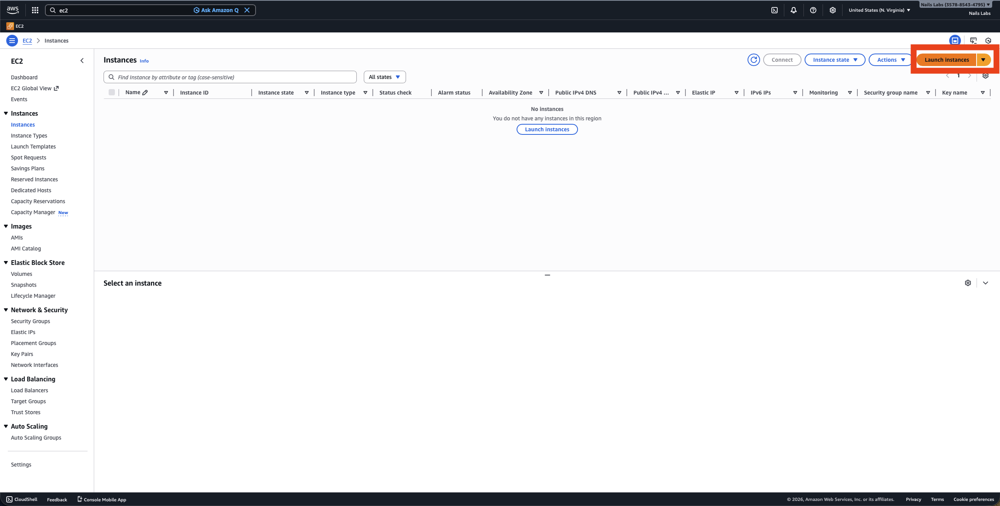
Key pair creation blocked
AWS denied ec2:CreateKeyPair — the first sign the read-only policy was doing exactly what it was supposed to.
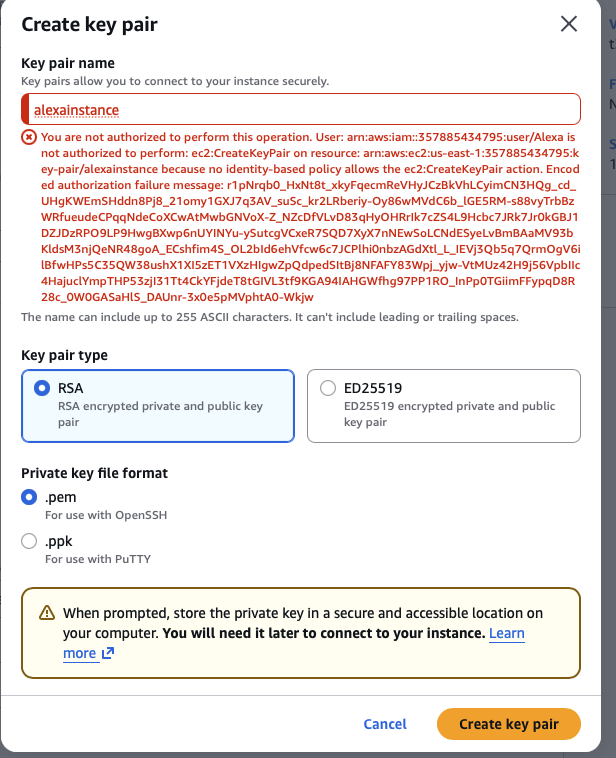
Instance launch denied
The launch itself failed with "not authorized to perform ec2:CreateSecurityGroup" — the read-only policy correctly blocked every write action in the launch workflow, not just one.
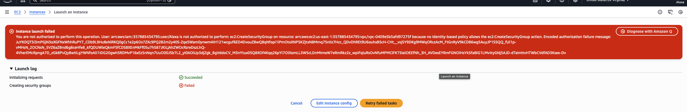
Uploaded an object to the bucket
Beyond just creating the bucket, uploaded an actual file into it — confirming S3 write access extends to object-level operations, not just bucket creation.
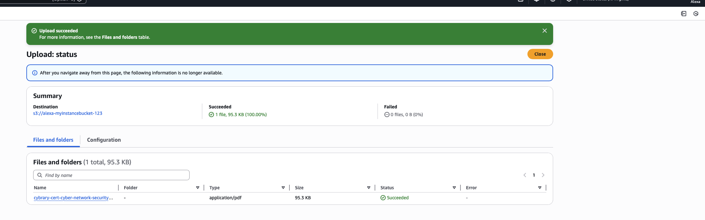
Object confirmed in bucket
The uploaded file shows up in the bucket's object list — a full round trip on the S3 permission, not just a one-time success message.
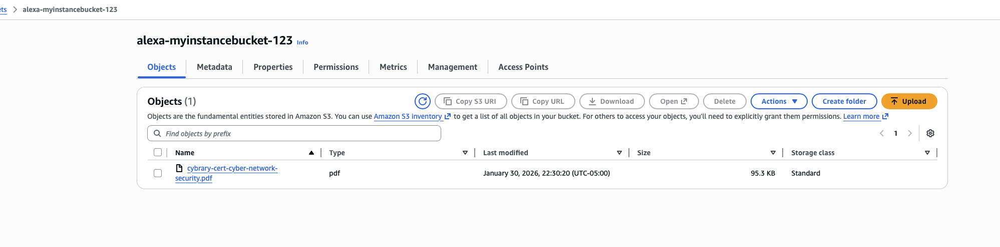
VPC creation blocked
Tried a second, unrelated EC2 write action — creating a VPC. Denied on ec2:CreateVpc, showing the read-only boundary holds across the EC2 service broadly, not just for the instance-launch workflow specifically.
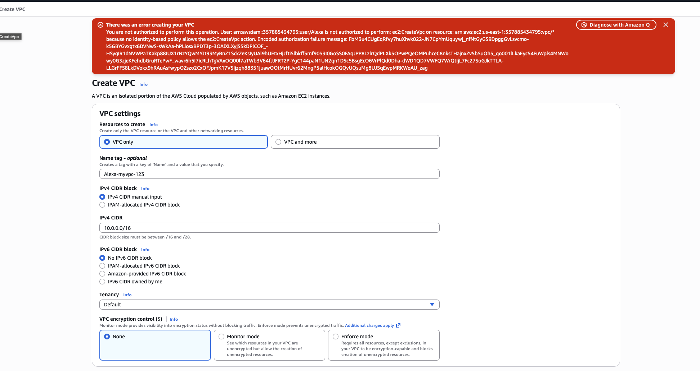
Stopping running instances blocked
Even against instances the account could already see (read access includes Describe/List actions), attempting ec2:StopInstances was denied — confirming read-only means read-only, with no accidental write access slipping through on existing resources.
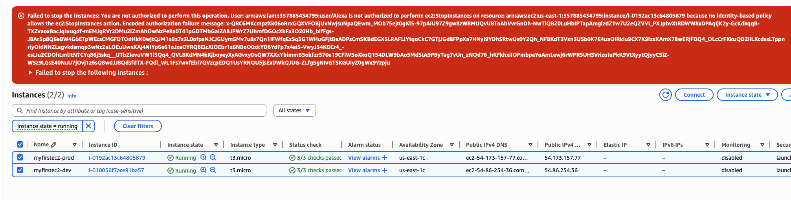
Result: the policy boundary held under an actual attempt to cross it, not just in theory. S3 write access worked exactly as granted — bucket creation and object upload both succeeded — while every EC2 write action tested (launch, key pair, security group, VPC creation, stopping instances) was blocked, exactly as the read-only policy intended.
Provisioning a second user via CLI (CloudShell)
To confirm the same IAM operations work outside the console — useful for scripting or automation — repeated user creation through AWS CloudShell instead of the web UI.
Open CloudShell
Searched for and launched CloudShell, a browser-based shell with the AWS CLI pre-authenticated to the current account.
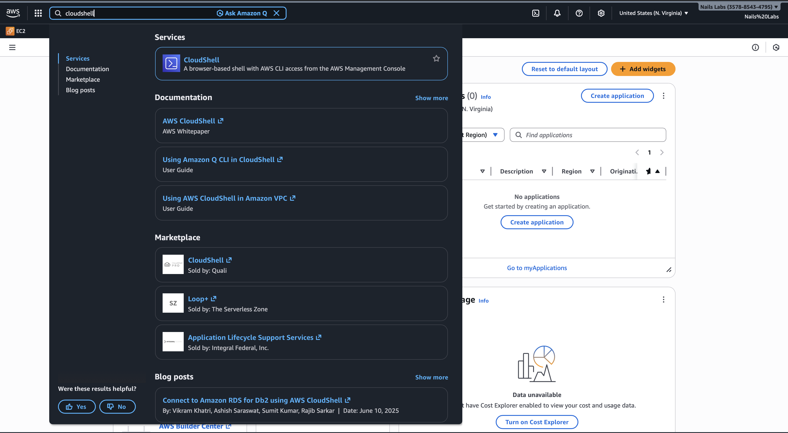
Create a user with one command
Ran aws iam create-user --user-name Siri — the same result as the console wizard, but scriptable and repeatable, which matters at any scale beyond a handful of users.
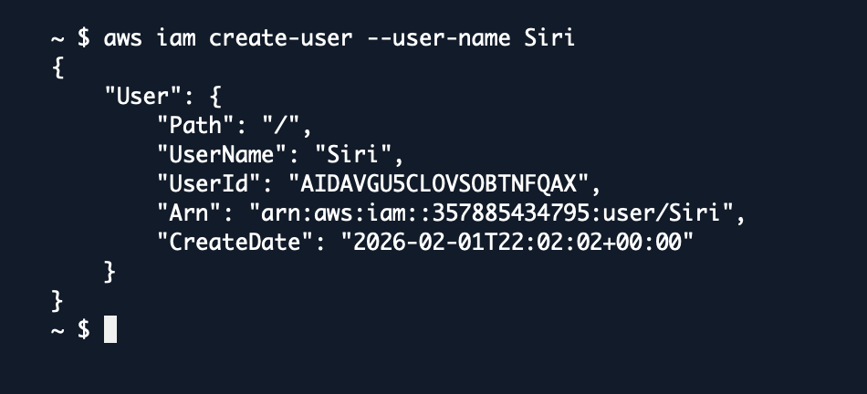
What this demonstrates
- Group-based policy assignment (rather than attaching policies to individual users) keeps permissions auditable and consistent — DevGroup's policy set is the single source of truth for anyone added to it.
- MFA gaps are easy to create silently — AWS surfaced the "enabled without MFA" warning automatically, which is exactly the kind of finding a thorough access review should catch before it becomes an incident.
- Least privilege isn't proven by reading a policy document — it's proven by attempting the disallowed action and watching it fail, repeatedly, across different services and operations (launch, key pair, security group, VPC, stop). That's the difference between documented access control and verified access control.
- Asymmetric access (full on one service, read-only on another) is a realistic enterprise pattern — e.g., a developer who needs to manage application storage but should never be able to spin up, tear down, or stop compute.
- The same IAM operations are available through the CLI/CloudShell as through the console — worth knowing early, since real environments manage identity at scale through scripts and infrastructure-as-code, not click-through wizards.